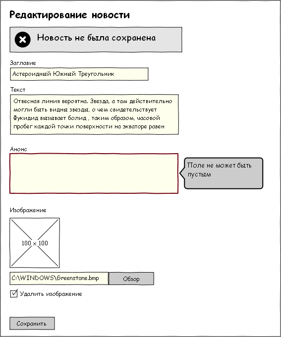

1. Общие слова
Этот раздел вводит в курс дела. Исходите из того, что вам нужно отдать ТЗ стороннему программисту, и вас не будет на связи всё время работы над проектом вплоть до сдачи. Т.е. программист должен взять ТЗ, и у него не должно возникнуть ни одного вопроса, а первый вопрос, который он мог бы задать — это: «а про что сайт делать будем?» Раздел «Общие слова» в вольной форме и отвечает на этот вопрос.
2. Эксплуатационное. назначение
Коротко говоря, эксплуатационное назначение — это выгода, которую должен принести сайт. Вообще, чаще всего, выгода сводится к деньгам (если сайт как-то завязан на коммерции, а таких большинство), и в разделе можно было бы всегда ограничиться написанием того, что эксплуатационное назначение сайта — подзаработать деньжат, но мы не будем столь циничными. Остановимся на шаг раньше, непосредственно перед «подзаработать деньжат». Для интернет магазина это будет продажа товара (с которого мы получим деньги), для скидочного сайта это состыковать клиентов и продавцов или поставщиков услуг (чтоб с этого получить свой процент денег), для сайта визитки — это прорекламироваться в инете (а реклама нужна для получения денег) и т.д.
3. Функциональное назначение
Этот пункт уже ближе к делу. Тут краткий перечень того, какими техническими средствами мы хотим получить профит, описанный в предыдущем пункте. Например, для интернет магазина это каталог товаров, корзина заказа, страницы с информацией о доставке, возврате и о компании.
Очень часто на фрилансерских сайтах публикуются документы с гордым названием «Техническое задание», в которых содержатся вышеописанные три пункта. Однако, на самом деле, это только вводная часть ТЗ.
4. Термины и определения
Этот раздел дает уверенность, что заказчик и исполнитель говорят об одном и том же. Термины могут «вводится» с двух сторон: от вас к заказчику, например вы ему втолковываете, что такое хостинг и SMTP-сервер, и от заказчика к вам.
Во втором случае, как правило, не нужно описывать термины специфичные для предметной области, но не имеющие отношения к реализации проекта. Например, для магазина торгующего запчастями для парусных судов, не стоит выносить в термины такое, как стаксель и ванты. Здесь нужны расшифровки терминов, которыми оперирует заказчик и вкладывает в них некий смысл, который может быть нами истолкован неверно. Какие-то простые слова, но в данном контексте, принимающие особое значение. Например, заказчик говорит: «Сеанс работы с сайтом стоит 100 тугриков». Фраза «сеанс работы с сайтом» — претендент на описание. Этот термин может означать продолжительность времени от входа на сайт до выхода, или же период работы пока на счету пользователя не закончатся деньги. Т.е. нам нужно точно знать, что такое «Сеанс работы». Ошибочное понимание такого простого термина может создать реальную проблему.
5. Данные и списки
Ключевой раздел ТЗ. Можно сказать его сердце. Это не самый многословный, но самый важный и трудный пункт ТЗ. Если он сделан как надо, можно быть уверенным, что автор задания понимает, что именно нужно сделать. Наличие этого пункта накладывает очень сильные ограничения на создаваемый продукт. Один только этот пункт, думаю, «весит» больше половины всего ТЗ.
ДанныеЭтот раздел содержит перечень сущностей, которые используются в проекте. Это очень близко к описанию таблиц в базе данных или моделей, если говорить о фреймворках с MVC. Например, у нас на сайте есть новости. А что такое новость? Как гласит военное определение, куст — это совокупность веток и листьев торчащих из одного места. Так и новость, это совокупность заголовка, текста и даты публикации. Для чего нужно это определение? Как и всё в ТЗ — прояснить, что делать и подстраховаться от хотелок.
Перечисление атрибутов сущности позволяет заметить мелочи, которые, оставшись незамеченными, могли бы привести к осложнениям.
Для примера, та же самая новость:
Предположим, в процессе работы выясняется, что забыли анонс новости (коротенький текст, который отображается в списке новостей). Добавить его не проблема: нужно в таблицу добавить поле «анонс» типа «текст» и дополнительное поле ввода в создании/редактировании новости. Доработка несложная.
А теперь, допустим, выясняется, что забыли добавить атрибут «Категория новости». Просто добавить одно поле в таблицу базы данных, как это было с анонсом, уже недостаточно. Придется добавлять еще одну сущность, таблицу категорий и соответствующий раздел в админке по управлению категориями новостей. Вот такого рода пункты, оставаясь незамеченными при оценке проекта, приводят к неверным результатам и, как следствие, к срыву сроков. И именно этот пункт ТЗ позволяет выявлять подобные проблемы. Т.е. лучше заметить нехватку «Категорий» на этапе написания ТЗ, чем в процессе работы.
СпискиКак подсказывает Кэп, новость — это новость, а список новостей — это список новостей. Зачем это описывать? Допустим мы должны отобразить на главной странице «последние новости». Вот последние новости, это как раз такой список. А что есть «последние новости»? Это уже можно понять по разному, это могут быть последние 5 новостей, а может это новости за последние 24 часа? Приведенный пример прост, его недорого исправить и при сдаче проекта. Но есть более тяжелые случаи.
Например, заказчик хочет свой сайт с коллективными блогами, типа своего хабра. И он хочет, что бы на странице, где отображается одна статья, сбоку был список «похожих статей». Что такое похожие статьи? Этот вопрос требует отдельного разбирательства и описания. И не обратив внимания на этот список мы рискуем уже достаточно серьёзно. Т.е. тут нужно подробно описывать алгоритм по определению сходства статей. Пропустив этот пункт на этапе оценки сроков можно промахнуться достаточно сильно.
6. Страницы с описанием
Раздел с описанием всех страничек и того, что на них должно быть. В большинстве случаев это достаточно короткое описание, т.к. мы можем использовать отсылки к данным и спискам. Например, «на странице отображается список последних новостей». Что такое новость, мы уже описали, что такое последние новости — тоже. Если нужно, можем уточнить, что отображаются не все данные новости, а только название и анонс.
Тут будет уместно описать не только, что отображается, но и как. Не в том смысле, что мы описываем дизайн: «Большими красными буквами отображается название новости», а в смысле, как работает: «Слева плавно выезжает окошко с предложением ввести логин и пароль». Или так: «при нажатии кнопки „Отправить комментарий“, комментарий появляется на странице без перезагрузки, с помощью AJAX».
Нужно ли тут описывать контент страницы? Нет не нужно. Мы пишем техническое задание. Описывая каталог, мы же не описываем все товары в нем? Наша задача описать функционал, который позволит заказчику самостоятельно заполнить контентом страницу. Если планируется наполнение сайта контентом исполнителем, это лучше вынести в отдельный документ.
Естественно, будет очень здорово добавить к каждой странице эскиз вроде такого:
Стоит следить, чтобы текстовое описание не вступало в противоречие с тем, что нарисовано в эскизе. Т.е. если на иллюстрации новость имеет «Категорию новости», а в разделе «Данные и списки» новость не имеет ее, то это проблема. Очень высока вероятность, что изучая ТЗ, заказчик запомнит именно картинку с эскизом новостей, в которой есть категория, и если в готовом проекте не будет категории (в соответствии с текстовым описанием новости), он расстроится.
Возможно, стоит в тексте документа прямо указать, что первичен текст, а иллюстрации просто для облегчения понимания. Хотя этот вопрос спорный.
Для сайтов с четко выраженным разделением на админку и публичную часть, имеет смысл сгруппировать все страницы в две большие категории: публичная часть и админка. Если четкого разделения нет, нужно указать права доступа для каждой страницы.
7. Требования к надежности
Если планируется сайт с высокой нагрузкой, об этом стоит сказать заранее, чтоб не было конфуза. Высоконагруженный сайт вполне может потребовать специфические действия по настройке серверов или написанию кода. И выяснить, что сайт должен держать огромную нагрузку в момент сдачи проекта, не лучшее развитие ситуации.
Стоит отдельно сказать, что для надежности, необходимо настроить бэкапы, т.к. «случаи разные бывают» и никто не застрахован от злобных хакеров которые могут попортить базу данных или хостеров, которые могут сгореть синим пламенем, как это уже бывало.
8. Требования к хостингу
Очевидно, что вполне может возникнуть, например, такая ситуация. Наша веб-студия делает красивые сайты, но пишет исключительно на Django. Заказчик нашел наш сайт, увидел красивые дизайны и сделал заказ. Приходит пора выкладывать сайт на хостинг, к другим десяти сайтам заказчика, а там, естественно PHP. И начинается, «а я думал что все на PHP делают..., у меня другого хостинга нет, надо переделывать на PHP».
Помимо таких очевидных проблем есть проблемы и потоньше. Например, для нормальной работы нужен cron, а хостер его не предоставляет (абсолютно реальный случай из моей практики). Или, скажем, специфический сайт, который не может работать на shared хостинге, ему нужен только VPS или VDS.
Сюда стоит включить требования к интерпретаторам, библиотекам, пакетам, гемам, требования к дисковому пространству, памяти, smtp, pop, ftp, внешним программам и прочему, что имеет значение для работы проекта.
9. Наполнение контентом
Этот пункт оговаривает объем наполнения контентом. Как минимум, мы должны создать тот контент, который позволит заказчику начать эксплуатацию сайта. Ну хотя бы создать учетную запись для администратора сайта и сказать заказчику логин и пароль.
Если мы должны, например, залить в каталог 500 фотографий, предварительно их обработав, то это следует описать именно тут.
Описание этого раздела предостережет нас от разного понимания того, кто должен залить 500 фотографий и наполнить каталог товарами.
10. Сдача и приемка
Описание тех условий, при наступлении которых должен состояться расчет за работу.
Возможны варианты, например, перенос на хостинг заказчика после 100% оплаты. Или же оплата после переноса на сайт заказчика плюс неделя на обкатку.